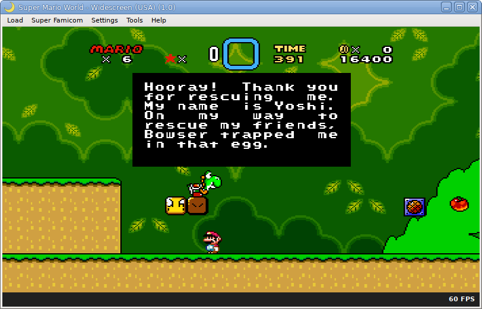
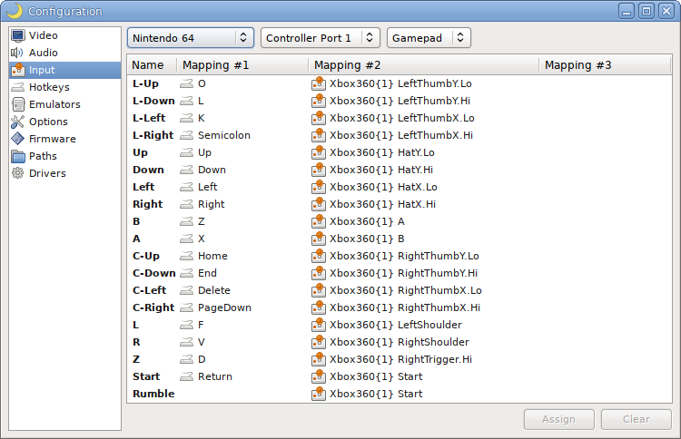

2021-06-26 23:51:37
ares v121 released
I've released ares v121. Because it is not fully complete or stable, it is released as source code only.
The license is now once again ISC instead of CC-BY-NC-ND.
Master System, WonderSwan, and WonderSwan Color compatibility have increased to 100%, with no remaining known bugs.
The Neo Geo Pocket is very close to 100% now with one issue remaining, where sound effects sometimes mute in games.
Nintendo 64 compatibility has increased to above 80% thanks to corrections to controller pak handling.
Several NES and Mega CD fixes have been added. EEPROM support has been added for the Mega Drive.
Memory cards and paks now pre-format themselves, so you don't have to do so in-game or in BIOS settings.
The new Neo Geo emulation is slowly improving, but it's still very preliminary with only seven games fully playable so far.
The Nintendo 64 SM5K and PlayStation HC05 processor cores have been emulated, but not connected yet due to a lack of information.
Added mouse input support and connected peripheral selection to the GUI, so mice and light gun games can now be used.
There is now per-system input mapping overlays, so you can map controllers based on the original system button names.
And lastly as promised, the SNES core has gained optional widescreen support.
Changelog:
- Nintendo 64: added Windows ABI support to dynamic recompilers
- PlayStation: added Windows ABI support to dynamic recompiler
- Nintendo 64: temporarily disabled 64-bit addressing mode due to issues
- Nintendo 64: corrected analog stick ranges and emulated octagonal boundaries
- Nintendo 64: code cleanups around memory access functions
- Nintendo 64: started to implement RDRAM broadcasting (very incomplete still)
- Mega Drive: improved VDP scanline renderer timing
- M68K: corrected clipping bug in ADD,CMP,SUB instructions
- Nintendo 64: improved SI scanning of PIF RAM and emulated more flags
- Nintendo 64: added very accurate controller pak initialization code
- Nintendo 64: improved controller analog stick approximations [MerryMage]
- Nintendo 64: added priority queue to delay SI and PI DMA transfers
- Master System: added bit-perfect YM2413 instrument patch sets
- Mega Drive: fixed a bug with LINEA and LINEF instructions (should not decrement PC)
- Mega Drive: added EEPROM emulation
- mia: added Mega Drive and Mega 32X EEPROM database entries
- nall: added priority_queue::remove(T) support
- Nintendo 64: reverted 64-bit TLB (not actually present)
- Neo Geo: initial implementation
- Neo Geo: many emulation improvements
- nall: add workaround for compilers that lack __has_builtin
- Nintendo 64: ignore A15 on controller pak reads and writes
- Master System: implemented Codemasters, Korea, MSX, Janggun mappers
- Master System: improved Sega mapper emulation
- Master System: added initial emulation of port $3e
- Master System: added support to load BIOSes
- Master System: initialize stack pointer to 0xfffd when no BIOS loaded [Luke Usher]
- Game Boy Advance: emulated BIOS swap register [MerryMage]
- Mega Drive: cancel pending IRQs when they are disabled [Jonas Quinn]
- Mega Drive: fixed handling of VDP field flag [Jonas Quinn]
- Mega Drive: mask upper bit of VDP sprite Y value when in progressive display mode [Jonas Quinn]
- X24C01, M24Cxx: improve emulation of EEPROM command sequences
- Famicom: added database entries for Jajamaru Gekimaden and Mazase Top Pro PRG-RAM
- M24Cx: rewrote emulation to be more complete; though still not working for Cxx/Cxxx sizes
- Nintendo 64: try stopping SI polling on recv=0xfe
- Mega Drive: improved EEPROM emulation
- Nintendo 64: fixed CPU SCC counter rate [simer]
- Nintendo 64: added initial emulation of the SM5K processor (not connected yet)
- lucia: update frame rate from the main thread to prevent a race condition with GTK
- Master System: emulated sprite zoom and fifth-sprite status flag
- Master System: corrected VDP background emulation for mode 4 [fixes Codemasters games]
- Master System: latch VDP background nametable address and scroll registers [fixes Desert Speedtrap]
- Master System: mask CRAM reads to 6-bit in Master System mode [fixes Mercs]
- Master System: refactored VDP code
- Z80: swapped IND/INI to post-decrement B, and OUTD/OUTI to pre-decrement B
- lucia: fixed a crash when loading Game Gear games due to stubbing out the BIOS
- Nintendo 64: fixed cartridge flash memory support
- Master System: VDP line coincidence should be initialized to $ff [fixes Shadow Dancer]
- Master System: VDP sprite overflow index defaults to $1f, not $00 [fixes PGA Tour Golf]
- SN76489: corrected port latching behavior and noise volume writes [fixes Micro Machines]
- TMS9918: greatly refactored code
- V9938: greatly refactored code
- Z80: disassembler fixes
- lucia: corrected mapping of Master System pause button [fixes Baku Baku Panic]
- nall: disable -Wstringop-overflow for GCC due to compiler heuristics error
- M68HC05: initial core implementation added
- M68000: renamed core from M68K
- Super Famicom: clearing $4200.d0 stops active joypad polling for the rest of the frame [Jonas Quinn]
- Master System: don't evaluate sprites past active display area [fixes Rescue Mission]
- Mega Drive: don't acknowledge VDP IRQs until the CPU triggers them [fixes Mega Lo Mania]
- lucia: begin refactoring input mapping to allow per-system mappings and multiple controller types
- Game Gear: set CPU::in() unmapped return value to MDR; fixes RoboCop 3 [Jonas Quinn]
- WonderSwan Color: do not mask screen tilemap base address; fixes Sorobang [FPGAzumSpass]
- Mega Drive: set supervisor mode and clear trace mode for all exceptions; fixes Gouketsuji Ichizoku [Jonas Quinn]
- Mega CD: format BRAM instead of leaving it uninitialized; fixes Popful Mail (US)
- WonderSwan: add patch for Meitantei Conan: Nishi no Meitantei Saidai no Kiki!
- Game Boy: add MBC1#M mapper database entries; fixes Bomber Man Collection, Genjin Collection, Momotarou Collection, and Mortal Kombat I & II
- Neo Geo Pocket: $8118 background register exists even in the K1GE GPU; fixes Samurai Shodown
- Neo Geo Pocket Color: return 0xFF acknowledge byte after flash erase command; fixes Puzzle Link 2 and Memories off: Pure
- Neo Geo Pocket: clear watchdog timer counter on trigger to prevent infinite triggering; fixes Neo Baccarat, Neo Cherry Master Color, and Neo Mystery Bonus
- TLCS900H: do not allow interrupts to run between CPDR, LDIR, LDDR instructions; fixes Fantastic Night Dreams Cotton
- Neo Geo Pocket: add all remaining missing I/O registers (not emulated, but registers are readable and writable now)
- Neo Geo Pocket Color: above changes also fixed in-game audio in Crush Roller and Dynamite Slugger
- Mega CD: added 1M mode WRAM swap request flag; fxies AX-101, Earnest Evans, and Might & Magic III [TascoDLX]
- lucia: added input mapping overlays for all remaining systems
- lucia: added two-player support to all remaining systems
- TLCS900H: refactored instruction decoder and disassembler using range-case
- TLCS900H: improved emulation of (PC+d16) addressing mode (LDAR)
- TMS9918, V9938, SMS VDP: corrected sprite zoom emulation [Jonas Quinn]
- Neo Geo Pocket: added new debugging modules (flash ROM, I/O accesses, system calls)
- Neo Geo Pocket: improved CPU interrupt logger (prints name of interrupt now)
- Neo Geo Pocket: fixed a critical issue with interrupt priority levels; fixes many games
- Neo Geo Pocket: added stubs for all remaining TMP95C061F I/O registers (not emulated yet)
- Neo Geo Pocket: set CPU I/O port $b1.d2 reads to return 1 (fixes SNK Gals' Fighter)
- Neo Geo Pocket: added stubs for undocumented CPU I/O ports $b6 and $b7
- Super Famicom: PPU code restructuring
- Super Famicom: added widescreen (16:9 and 21:9) support to the scanline renderer
- WonderSwan: refactored I/O handlers to use switch/case instead of if tests
- WonderSwan: rewrote PPU renderer to modularize each component (screen1, screen2, sprite, dac, etc)
- WonderSwan: corrected timers to count down instead of up; fixes timing in many games [FPGAzumSpass]
- WonderSwan: improved screen two window emulation [FPGAzumSpass]
- hiro: TableView::onContext() is now TableView::onContext(TableViewCell) (not supported for Cocoa or Qt yet)
- lucia: merged code to handle input assignment overlays and controller polling for each emulation core
- lucia: added virtual mouse emulation and added mouse capture support
- lucia: added support to change devices connected to controller ports
- Neo Geo Pocket: added database workaround for underdumped Prize Game: PP-AA01 Pusher Program (Japan)
- Neo Geo Pocket: fixed fast boot mode for Neo Cherry Pocket
- nall/range: added new within() templates
- V30MZ: emulated instruction prefetch
- V30MZ: greatly improved instruction timings (thanks to FPGAzumSpass' test ROM)
- WonderSwan: disabling an interrupt source does clear its pending status (fixes Digimon Tamers)
- TLCS900H: improved prefetch handling and instruction timing (still imperfect)
- TLCS900H: improved timing further (still imperfect)
{kind=link}

{kind=link}

{kind=link}